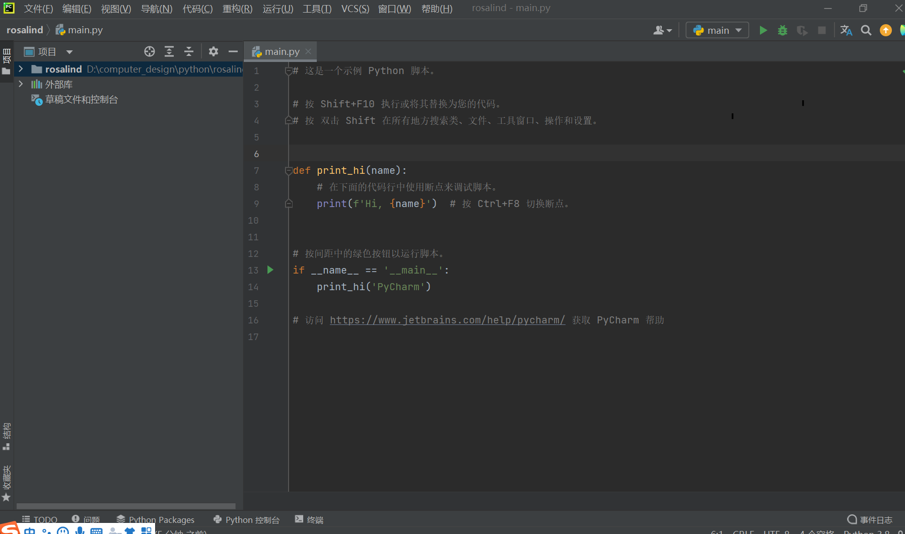
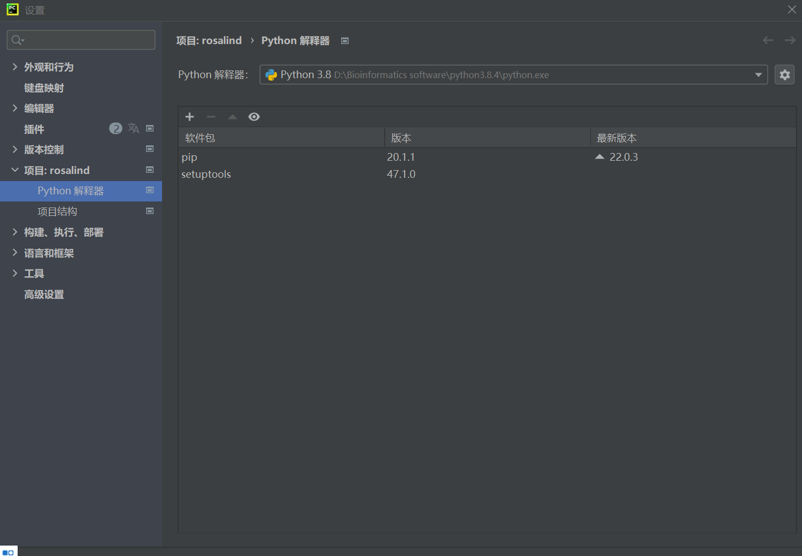
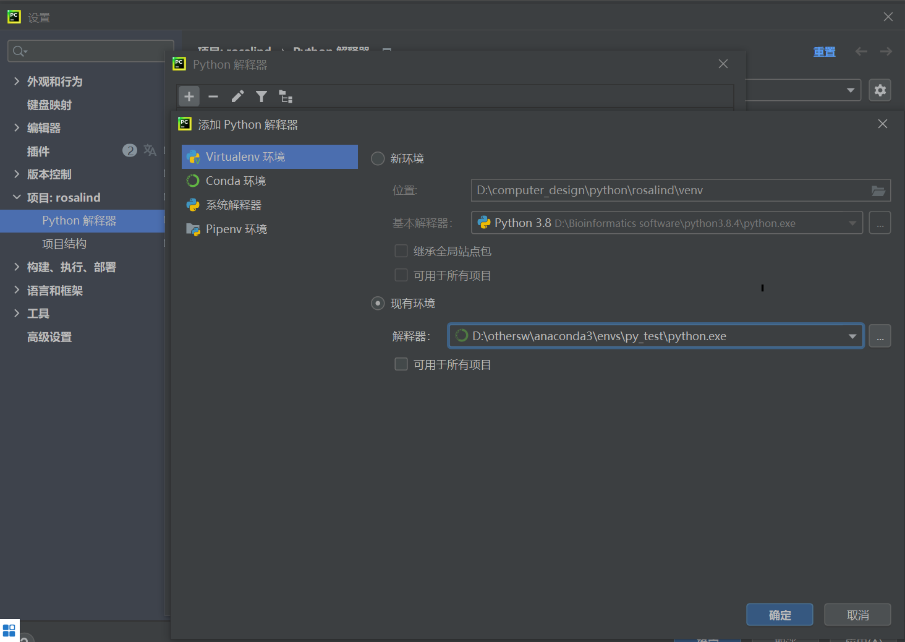
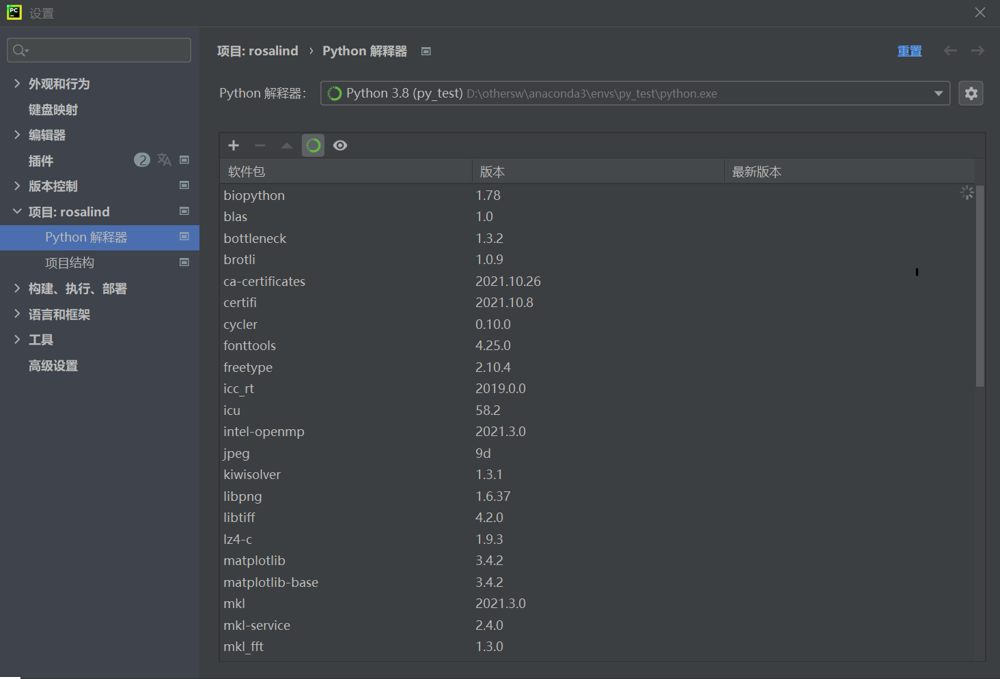
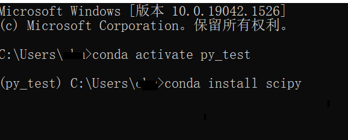

PyCharm配置Anaconda PyCharm配置Anaconda0、写在前面123#时间长不用会忘，不想每次找教程#在win10系统下操作#pycharm和anaconda的下载略 1、环境配置1#新建项目  12#选文件---设置---python解释器#把解释器改成anaconda创建的python环境   1#这下就能看到环境里面多了好多包  2、下载python包1#进入cmd环境，激活conda环境，下载python包后，在pycharm中可以刷新到  教程 python 本博客所有文章除特别声明外，均采用 CC BY-SA 4.0 协议 ，转载请注明出处！ 猕猴胎脑CP层ChIP-seq分析(下) 下一篇